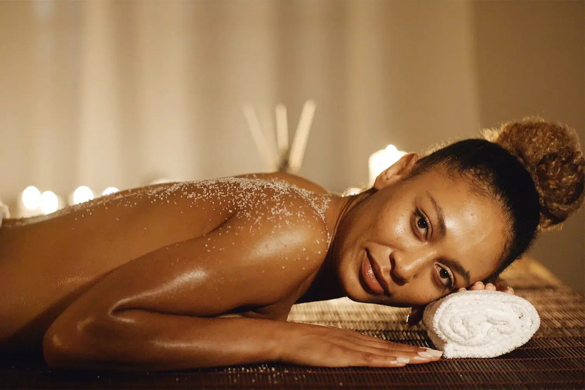

If you play tennis, swim, climb, throw a baseball, or do any overhead sport in the Seattle/Bellevue area, you probably know the nagging ache deep in your shoulder. That "something isn't right" feeling when you reach overhead or try to sleep on that side. It might be rotator cuff fatigue – and if ignored, it can turn into a real injury. Sports massage for rotator cuff recovery is a proven tool to reduce tension, improve mobility, and help you stay in the game.
At Lazizi® Wellness, we specialize in rotator cuff massage in Bellevue, Seattle, Redmond, Kirkland, and throughout King County. From weekend warriors at Marymoor Park to competitive swimmers at the King County Aquatic Center, we see the same pattern: overworked rotator cuffs, tight upper back muscles, and shoulders that just don't move right. Sports massage isn't a substitute for medical care, but it can be a powerful part of your injury prevention and recovery plan.

What Is the Rotator Cuff – and Why Does It Suffer?
Your rotator cuff is a group of four muscles (supraspinatus, infraspinatus, teres minor, subscapularis) that stabilize the shoulder joint. Overhead movements – serving a tennis ball, swimming freestyle, throwing a baseball, climbing, or even lifting weights – place repetitive stress on these small muscles. With poor mechanics, weak scapular stabilizers, or too much volume, you get impingement, tendinopathy, or worse, a tear.
Early signs include: dull ache on the outside of the shoulder, pain when lifting the arm to the side, weakness in overhead positions, and difficulty sleeping on that side. Massage won't fix a full tear, but it can help with the muscle tension and poor movement patterns that contribute to the problem.
How Sports Massage Helps Rotator Cuff Recovery
For non‑acute, cleared‑by‑doc shoulder issues, sports massage can target:
- Supraspinatus trigger points – common in impingement.
- Infraspinatus and teres minor tightness – affects external rotation.
- Subscapularis muscle – often overlooked but critical for internal rotation.
- Deltoid and trapezius tension – secondary compensators.
- Pectoral tightness – pulls the shoulder forward, worsening impingement.
Techniques include myofascial release, ischemic compression (targeted pressure on trigger points), and gentle stretching. Pressure is always within your comfort zone. We never work on acutely injured, swollen, or diagnosed tear areas without explicit medical clearance.
Overhead Athletes in Bellevue & Seattle: Who Benefits Most?
From the tennis courts at Bellevue Downtown Park to the climbing gyms in Redmond, overhead athletes push their shoulders to the limit. The most common scenarios we treat include:
- Tennis & Pickleball: Serving and overhead smashes stress the supraspinatus.
- Swimming: Freestyle and butterfly create impingement risk from repetitive abduction.
- Baseball/Softball: Throwing involves extreme ranges of motion and eccentric load.
- Rock Climbing: Overhead pulling (especially on steep routes) can fatigue the rotator cuff.
- Volleyball & Basketball: Reaching, blocking, shooting – all overhead.
- CrossFit & Weightlifting: Overhead presses, snatches, and pull‑ups can strain the shoulder.
Our therapists work with athletes before and after competitions, during training cycles, and as part of injury prevention plans.
When to See a Doctor First (Red Flags)
Massage is not appropriate for:
- Sudden, sharp shoulder pain after a specific incident (e.g., a fall or a hard throw)
- Complete inability to lift your arm
- Swelling, bruising, or deformity around the shoulder
- Known or suspected rotator cuff tear (diagnosed by MRI/ultrasound) without clearance from an orthopedist
- Shoulder that “catches” or “locks”
- Pain accompanied by fever, shortness of breath, or swelling in other joints
If you have an acute injury, see a doctor or physical therapist first. Once you have a diagnosis and clearance, we can work on the surrounding muscles to support your recovery.
What a Rotator Cuff Focused Massage Session Includes
A typical 60‑minute sports massage session may include:
- Assessment: Range of motion, pain provocation tests (within scope), and discussion of recent activity.
- Myofascial release of the shoulder girdle: Mobilizing tight fascia around the scapula and chest.
- Trigger point work on rotator cuff muscles: Using thumb, elbow, or specialized tools.
- Stretching: Assisted cross‑body stretch, sleeper stretch, and posterior capsule work.
- Advice on self‑care: Stretches, foam rolling, and when to see a doctor or PT.
We also offer 30‑minute express sessions focused solely on the shoulder girdle – perfect for in‑season maintenance.
Mobile Sports Massage for Athletes in Bellevue & Seattle
After a hard practice or match, driving across town is the last thing you want to do. Our mobile sports massage service brings the table to your home – in Bellevue, Redmond, Kirkland, Seattle, or most of King County. You can cool down, shower, and receive bodywork without leaving your house.
For teams or small groups, we offer on‑site event massage (with advance arrangement). Perfect for tournaments, training camps, or corporate wellness days.
Explore our sports massage and deep tissue services for athletes in King County. For at‑home convenience, mobile massage for Bellevue, Seattle and the Eastside is available.
Self‑Care & Injury Prevention for Overhead Athletes
- Strengthen your scapular stabilizers: Rows, YTWL exercises, and wall angels.
- Improve thoracic mobility: A stiff upper back forces the shoulder to work harder.
- Stretch your pecs: Doorway stretch, 30 seconds each side, 3x daily.
- Use a lacrosse ball on tight infraspinatus: Lean against a wall and roll the ball over the rear shoulder blade.
- Ice after overhead activity: 10–15 minutes if you feel post‑activity soreness.
- Maintain good posture: Forward head posture contributes to shoulder impingement.
- Warm up properly: Dynamic shoulder rotations, arm circles, and band pull‑aparts before overhead activity.
For authoritative guidance on rotator cuff health, refer to the Mayo Clinic rotator cuff injury overview and the American Academy of Orthopaedic Surgeons.
Keep Your Shoulder Healthy and Mobile
Book a rotator cuff recovery session – mobile or in‑studio – for overhead athletes in Bellevue & Seattle.
Book Your Sports Massage →Frequently Asked Questions – Rotator Cuff Massage
Can sports massage help a rotator cuff injury?
Sports massage can help reduce muscle tension around the shoulder, improve blood flow, and support mobility. It is not a substitute for medical treatment. Always consult a doctor or physical therapist for a diagnosed rotator cuff tear or severe injury.
What sports cause rotator cuff issues in Seattle?
Overhead athletes – tennis players, swimmers, baseball/softball players, climbers, and volleyball players – are at higher risk. Even repetitive desk work or lifting can contribute to shoulder impingement.
Do you offer mobile sports massage in Bellevue for athletes?
Yes. Lazizi Wellness provides mobile massage in Bellevue, Seattle, Redmond, Kirkland and King County. We bring the table to you – perfect for post‑game or post‑training recovery.
How often should overhead athletes get a rotator cuff massage?
Many athletes benefit from a session every 2–4 weeks during peak training. During off‑season or maintenance phases, every 4–6 weeks may be sufficient. Listen to your body and adjust based on soreness and activity level.
This information is for educational purposes and does not constitute medical advice. If you have shoulder pain, especially after an injury, consult a healthcare professional for an accurate diagnosis and treatment plan.